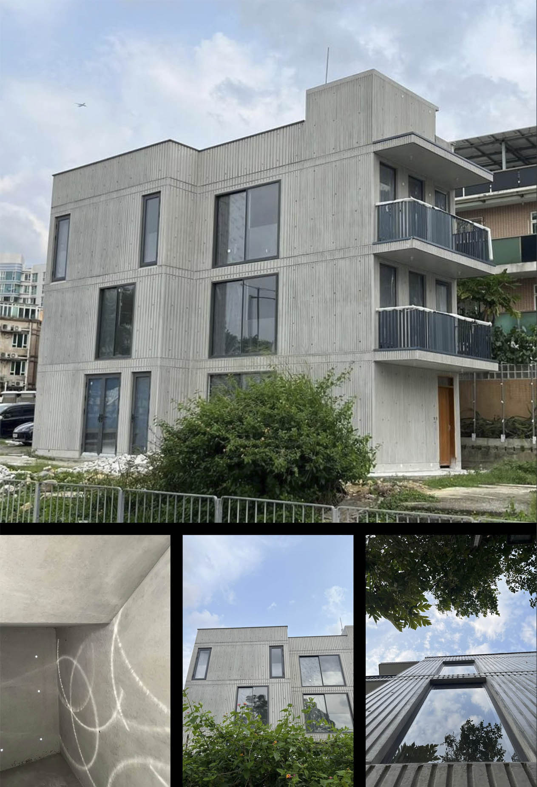
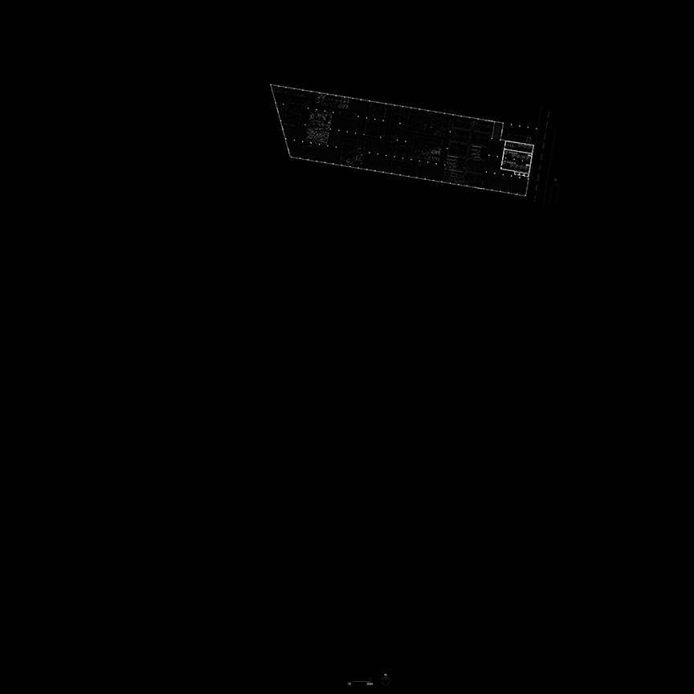
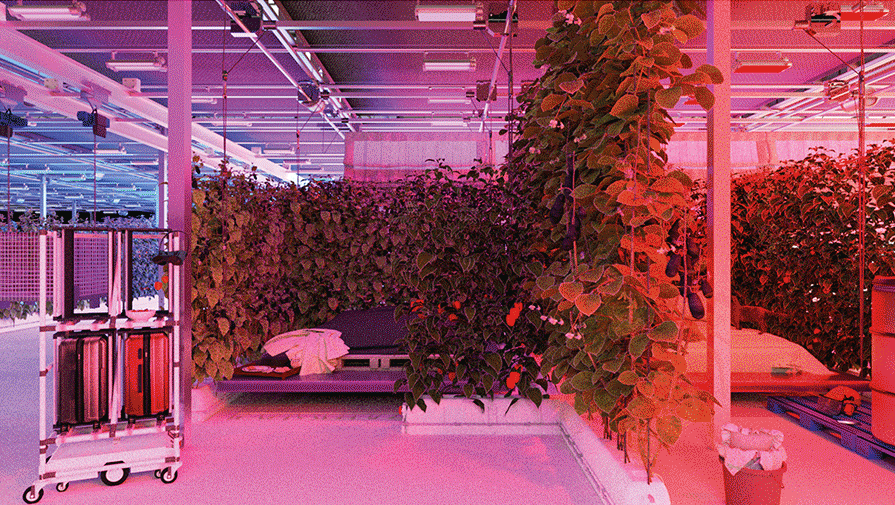
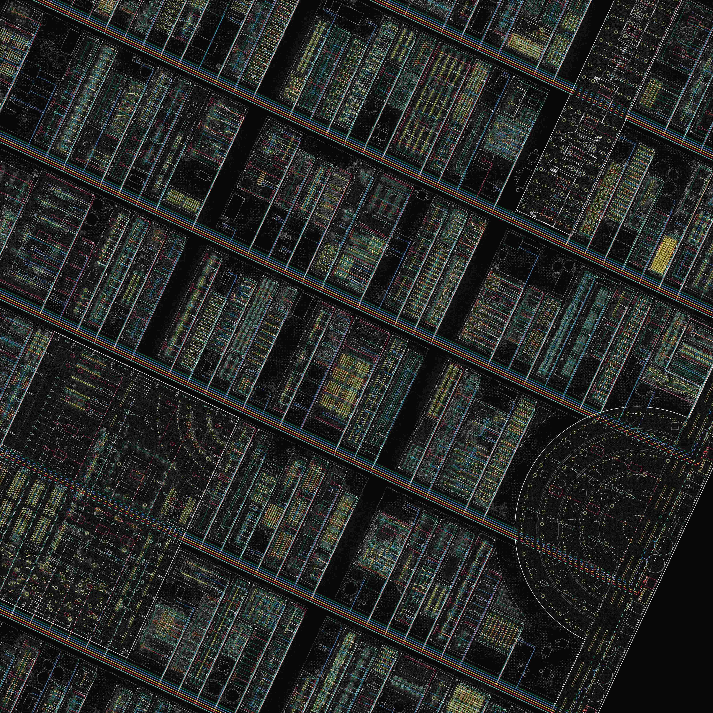
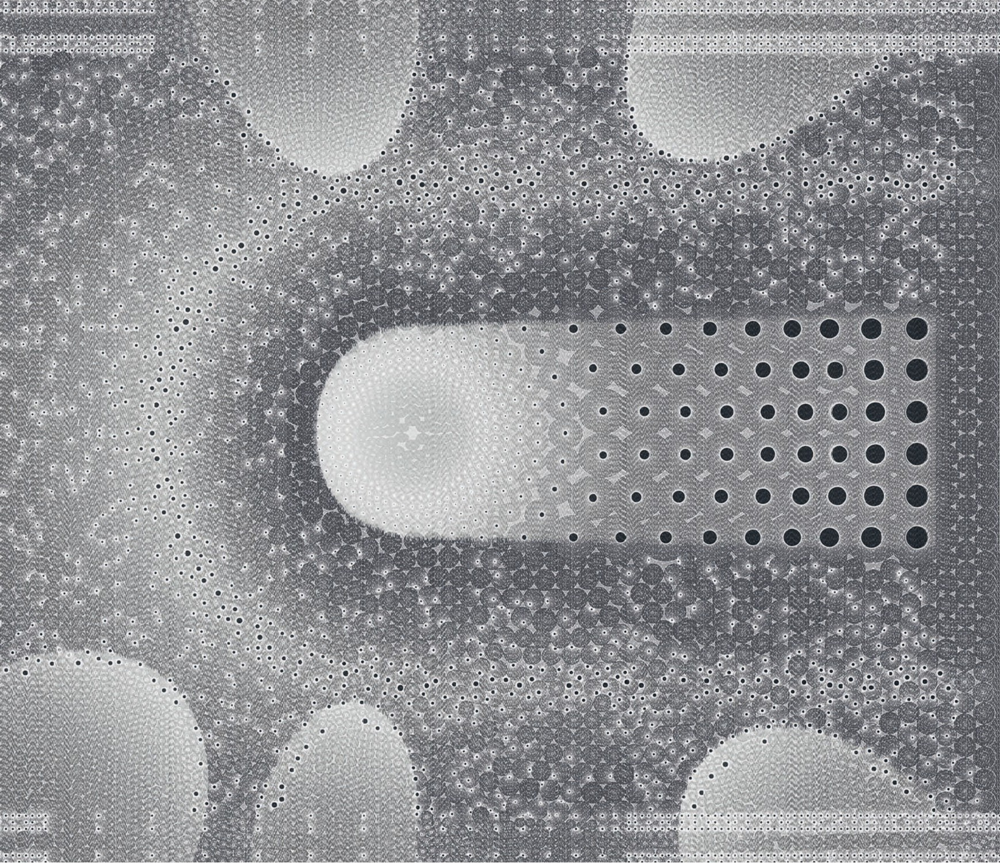
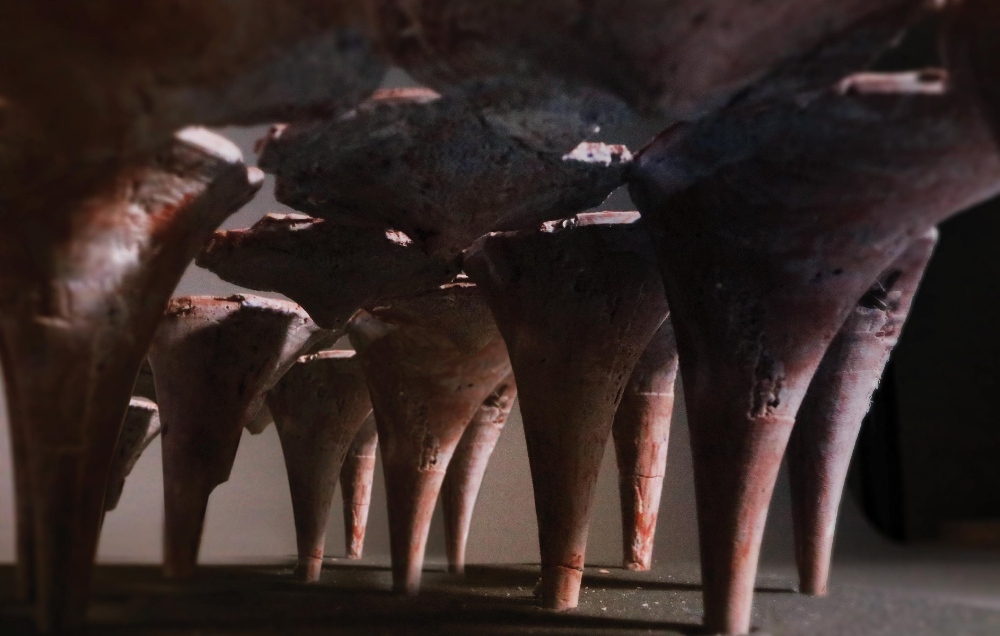
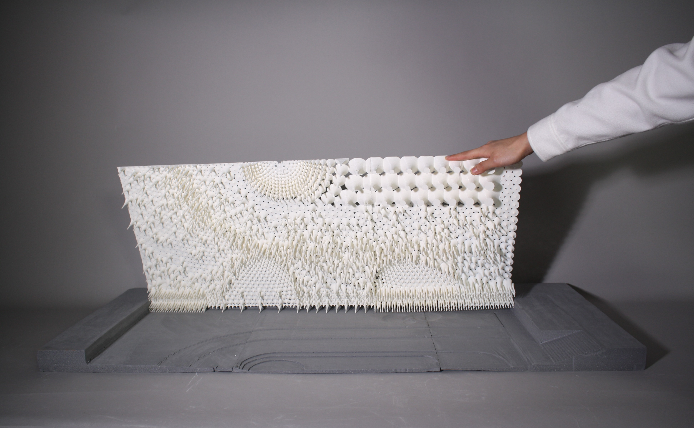
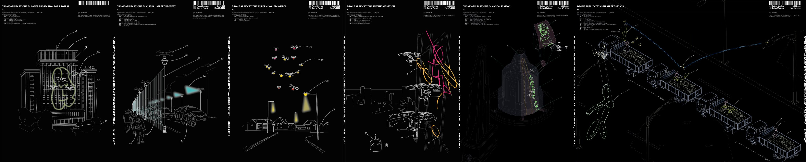

Haven House | 泊蘆
2024-
Location: Sai Kung, Hong Kong
Site Area: 60 sqm
Total Area: 180 sqm
Usage: Commercial / Residential
Haven House is a three-storey concrete structure located at a motorway confluence in Sai Kung. The project utilizes the mass of fairface concrete to mitigate roadside noise and establish a quiet interior environment. Built from exposed light-grey concrete, the exterior features a grid of 20mm wooden dowel imprints—a visual record of the timber formwork that also assists in deflecting sound waves. The internal layout follows a west-to-east gradient, anchoring the circulation and services near the road to shield the primary living areas. North-facing windows (900mm to 2100mm) capture indirect light and views while maintaining the building's acoustic and thermal seal. The 180 sqm interior is designed without internal columns, utilizing the exterior walls as the load-bearing structure to allow the floor plates to be appropriated as three units, a duplex, or a single-family home. Inside, the raw concrete is balanced with travertine, natural wood, and stainless steel, creating a simple, adaptable space where the resident is housed.
Project Credits
Architect: Uno Lam
Lead Design: Uno & Roland Lam
Foreman: Roland Lam
Government & Utility Liaison: Uno & Roland Lam, Mr.Lui, Mr. Kam
Finance & Site Management: Uno & Roland Lam
Procurement & Logistics: Roland Lam , Mr.Lau
Design Assistant: Ryan Yeung, Miss Lai
Main Contractor: Mr. Fong, Mr. Kam
Technician: Mr. Lui

AGRO-VIVARIUM
2022
This project examines the evolution of farming from ancient rituals to contemporary smart farming, where technology integrates humans, plants, animals, sensors, and data systems to optimise production. Grounded in Korean ethnographic research, it highlights how new technologies disrupt traditional lifestyles, inspiring innovative ways of working, living, and enjoying life. The project envisions an experimental smart-farm city and festival, transcending conventional typologies of housing, work, and family to foster novel cultural forms driven by smart farming technologies. It aims to amplify creative, pleasure-driven uses of these advancements, reimagining farming's role in shaping society.



HEALING-SMART-FARM,
SEOUL
@HYUNDAI ZERO01NE
2022
// Lead by James Kwang-Ho Chung
Collaborators: Shanna Sim Ler Chung, Minji Kim, Joonsung Kim, Brendon Carlin //
The Healing-Smart-Farm in Gangnam, Seoul, combines smart farming technologies with urban agriculture to offer Gangnam-gu Healing-Allotments for 200 residents in Segok-dong since 2020. This initiative integrates automated data-driven farming with trends like rooftop gardens, organic cultivation, and healing-focused farming to address urban stress and productivity demands. It reflects a shift from traditional farming constraints, leveraging technology to operate continuously and enhance efficiency. By institutionalizing agriculture and managing complexity through advanced systems, the project balances economic, technological, and emotional needs. Supported by government and corporate investments, it redefines urban farming as a futuristic, productive, and therapeutic control for sub urban living.
Project was exhibited in Seoul 2022
Click me to view project

THE TEMPLE OF DOING
NOTHING
2019
The project envisions a 10,000-square-meter underground space centered on a Temple of Doing Nothing, offering Hong Kong's youth an escape from rigid and compelling lifestyles. Inspired by communities like Slash Youth, Space-Out competitors, and Repair Cafes, it critiques how architecture enforces standardization. Housing 500 young workers, the space is designed without walls or rooms, focusing on simple, collective utilities to meet basic needs. It emphasizes the paradox of doing nothing by organizing life's essentials while rejecting prescribed rituals. The project explores how architecture can liberate alternative lifestyles and values, challenging the pressures of isolation and work-life imbalance.



The Hijacked Authority
2021
The proposal explores tactics to disrupt the status quo perpetuated by the built environment. Under the disciplinary control of the state, systems of the urban become potent agencies to be hijacked, breaking points for resistance.


